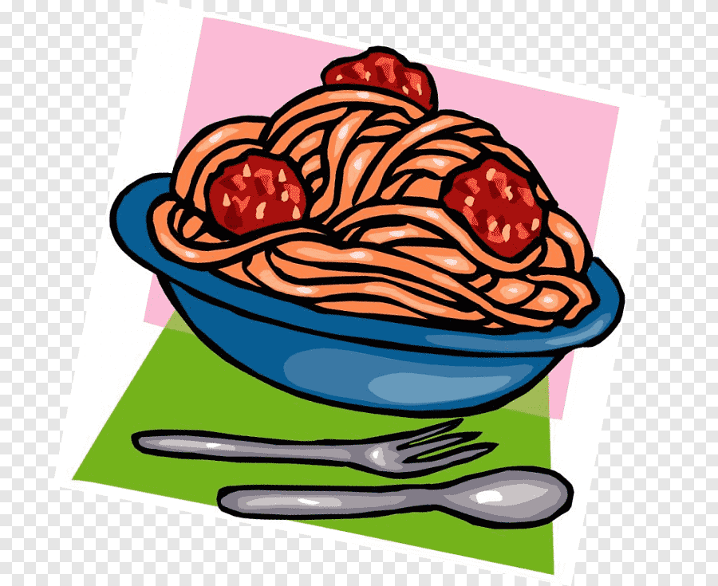

Nuestras comidas tipicas mas populares son

Pasta alimentaria originaria de Nápoles. Los espaguetis son largos cilindros macizos, muy finos. Eran de elaboración doméstica ancestral y se comercializaron en el Renacimiento al mismo tiempo que los macarrones.
Pan plano horneado elaborado con harina de trigo, sal, agua y levadura y cubierto con salsa de tomate y otros ingredientes como queso, salami, champiñones, cebolla, jamón o aceitunas

Plato que se prepara con láminas de pasta italiana de unos 10 centímetros de ancho que se alternan con capas de picadillo variado; generalmente se recubre la última capa de pasta con salsa blanca o de tomate, se espolvorea con queso rallado y se gratina.